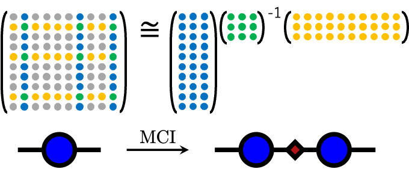
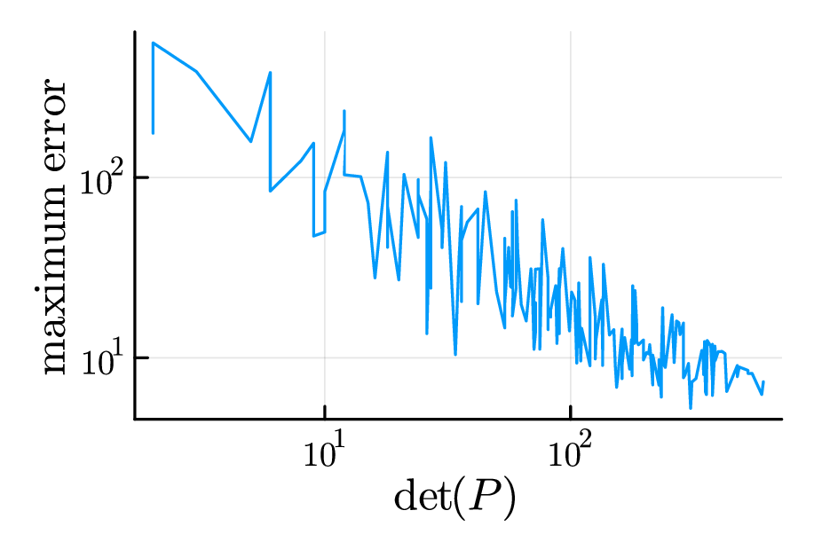
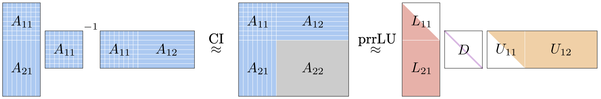

Method
Matrix Cross Interpolation
Matrix Cross Interpolation (MCI) は，行列のすべての成分を使うのではなく， 選ばれた行と列だけから行列全体を近似する方法です． 高次元テンソルへ拡張すると Tensor Cross Interpolation (TCI) になり， 巨大なテンソルや高次元関数を少ないサンプル点から構成するための基礎になります．
具体例で雰囲気をつかみたい場合は， Zennの記事にデモをまとめています．
SVDとの違い
特異値分解に基づく低ランク近似は強力ですが， 分解を行うためには対象となる行列の成分をあらかじめ用意する必要があります． 行列が非常に大きい場合や，成分の評価そのものにコストがかかる場合， 行列全体を作ってから分解する方針はすぐに重くなります． MCIでは，行列全体ではなく一部の行と列のみを評価し，行列分解を行います．
行列の部分行列
サイズ $m\times n$ の行列 $A$ を考えます． 行と列のインデックス全体をそれぞれ $\mathbb{I}=\{1,2,\dots,m\}$，$\mathbb{J}=\{1,2,\dots,n\}$ とします． この中から選ばれた行と列の集合を $\mathcal{I}=\{i_1,i_2,\dots,i_{{\chi}}\}$， $\mathcal{J}=\{j_1,j_2,\dots,j_{{\chi}}\}$ と書きます．
行列 $A$ から，行を $\mathcal{I}$，列を $\mathcal{J}$ に制限して取り出した部分行列を $A(\mathcal{I},\mathcal{J})$ と表します．例えば，$A(\mathbb{I},\mathcal{J})$ は 選ばれた列だけを抜き出した行列で，$A(\mathcal{I},\mathbb{J})$ は 選ばれた行だけを抜き出した行列です．
Matrix Cross Interpolation
MCI では，選ばれた行と列が交差する部分行列 $P=A(\mathcal{I},\mathcal{J})$ をピボット行列と呼びます． $P$ が正則であるとき，行列 $A$ は次のように近似されます．
右辺に現れるのは，選ばれた列 $A(\mathbb{I},\mathcal{J})$， ピボット行列 $P$，選ばれた行 $A(\mathcal{I},\mathbb{J})$ だけです． そのため，全成分を評価する代わりに，選ばれた断面から行列全体を復元する近似とみなせます．

補間としての性質
MCI による近似 $\widetilde{A}$ は，選ばれた行と列の上では元の行列 $A$ と一致します．
この性質から，MCI は単なる低ランク分解というより， 選ばれた行と列を厳密に通る補間と見ることができます． また，$A$ のランクと同じ数だけ適切なピボットを選べた場合には， この近似は厳密になり $\widetilde{A}=A$ が成り立ちます．
ピボットの選び方
MCI の精度は，ピボットの数 ${\chi}$ だけでなく， どの行と列を選ぶかに大きく依存します． 代表的な考え方の一つが Maximal Volume Algorithm で， ピボット行列の「体積」，すなわち行列式の絶対値が大きくなるように 行と列を選ぶ方針です．
直感的には，似たような行や列ばかりを選ぶと，まだ見ていない成分をうまく説明できません． できるだけ独立な情報を持つ行と列を選ぶことで，少ないピボット数でも 行列全体を良く近似できる可能性が高くなります．

prrLU分解との関係
実際の計算では，ピボット行列の逆行列を明示的に計算するよりも， LU分解に基づいて安定にピボットを選ぶ方法がよく使われます． その一つが partial rank-revealing LU (prrLU)分解です．
prrLU 分解では，行と列の置換を表す行列 $P,Q$ を用いて， 行列 $A$ を指定したランクで次のように分解します．
ここで $\widetilde{L}$ は下三角的な行列，$D$ は対角行列， $\widetilde{U}$ は上三角的な行列，$\varepsilon$ は残差を表します． 「partial」という名前の通り，ガウスの消去法を任意のピボット数で止めることができ， その時点のピボットから MCI と等価な近似が得られます．
MCI と prrLU 分解は数学的には対応していますが， prrLU ではピボット行列の逆行列を明示的に作らずに済むため，数値的により安定です． そのため，TCI のような大規模な補間アルゴリズムの実装では， prrLU 的なピボット選択が重要になります．

TCIへの橋渡し
Matrix Cross Interpolation は，行列という2次元の対象に対する補間です． これを多次元テンソルへ拡張し，TT形式のコアをサンプル点から構成する方法が Tensor Cross Interpolation です．
参考文献
- S. Dolgov and D. Savostyanov, Computer Physics Communications 246, 106869 (2020).
- Y. N. Fernandez et al., arXiv:2407.02454 (2024).